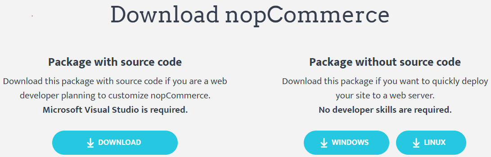
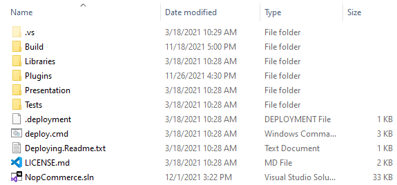
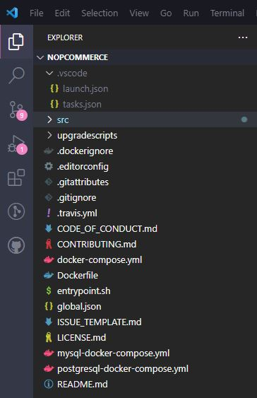
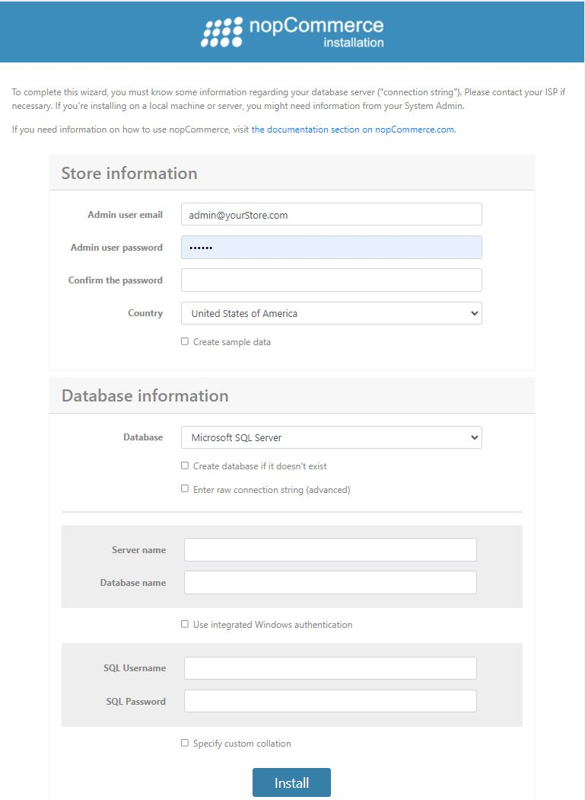

nopCommerce 開發入門
nopCommerce 是一個基於 Microsoft ASP.NET 開源的電子商務解決方案。這是一份針對開發人員的基礎指南，教您如何開始在 nopCommerce 上進行開發。
1. 開發所需工具
您可以從 「開發所需工具」 一文中了解技術與系統需求。
2. nopCommerce 使用的技術堆疊
nopCommerce 最棒的一點在於其原始碼完全可客製化，且其可插拔的架構透過外掛系統，讓開發自訂功能與滿足任何商業需求變得相當容易。它遵循業界知名的軟體架構、設計模式以及最佳安全性實作。最重要的是，它執行在最新的技術之上，為終端使用者提供最佳體驗。因此，為了達成這些目標，nopCommerce 在其架構中使用了以下技術堆疊。
應用程式層 (Application Layer)
Razor View Engine
用於在客戶端渲染 HTML 頁面。Razor View engine 是一種標記語法，協助我們在網頁中使用 C# 或 VB.NET 來撰寫 HTML 與伺服器端程式碼。
JQuery
這是一個 JavaScript 函式庫，用於擴充 HTML 頁面的 UI 與 UX 功能。
商業邏輯層 (Business Layer)
Fluent Validation
這是一個用於 .NET 的驗證函式庫，使用 Fluent 介面與 lambda 運算式來建立驗證規則。
AutoMapper
AutoMapper 是一個簡單的函式庫，協助我們將一種物件型別轉換為另一種。這是一個基於慣例的物件對物件 (object-to-object) 對應工具，幾乎不需要什麼設定。
ASP.NET Core 內建相依性注入 (Dependency Injection)
ASP IOC 管理類別之間的相依性，讓應用程式在規模與複雜度增加時，依然容易變更。
Linq2DB
Linq2DB 是一個用於 .NET 應用程式的開源 ORM 框架。這是一個 .NET Foundation 專案。它讓開發者能使用特定領域類別 (domain-specific classes) 的物件來處理資料，而不必關注資料實際儲存所在的底層資料庫表格與欄位。因此，它是商業邏輯層與資料層之間的橋樑。
FluentMigrator
Fluent Migrator 是一個用於 .NET 的遷移 (migration) 框架。遷移是一種變更資料庫綱要 (schema) 的結構化方式，用以取代需要每位參與開發人員手動執行的繁雜 SQL 指令碼。遷移解決了為多個資料庫（例如開發人員的本機資料庫、測試資料庫與生產資料庫）演進資料庫綱要的問題。資料庫綱要的變更會被描述在以 C# 撰寫的類別中，這些類別可以簽入版本控制系統。
資料層 (Data Layer)
Microsoft SQL Server
SQL Server 是微軟功能完整的關聯式資料庫管理系統 (RDBMS)。
MySQL
MySQL 是全球最受歡迎的開源資料庫。憑藉其經過驗證的效能、可靠性與易用性，MySQL 已成為網頁應用程式的首選資料庫。
PostgreSQL
PostgreSQL 是一個強大且開源的物件關聯式資料庫系統，擁有超過 30 年的活躍開發歷史，並因其可靠性、強大的功能與高效能而享有盛譽。
Redis (快取)
Redis 是一個開源（BSD 授權）、記憶體內的資料結構儲存庫，可用作資料庫、快取與訊息代理程式。在 nopCommerce 中，Redis 用於將舊資料儲存為記憶體內的快取資料集，這能提升應用程式的速度與效能。
Microsoft Azure (選擇性)
Azure 是一個公有雲端運算平台，提供包括基礎設施即服務 (IaaS)、平台即服務 (PaaS) 與軟體即服務 (SaaS) 等解決方案，可用於分析、虛擬運算、儲存、網路等各類服務。
3. 如何下載專案並在本地機器上執行
在開始使用 nopCommerce 之前，我們需要確保本地機器已正確設定，且所有必要的工具都已正確安裝並運作正常。現在，讓我們按照步驟說明，了解如何下載並在您的本地機器上執行 nopCommerce。
步驟 1：下載 nopCommerce 原始碼
請前往 www.nopcommerce.com 進行下載。您可以在該頁面看到兩個下載按鈕，一個包含原始碼，另一個則不含原始碼，如下圖所示。

由於我們是為了開發目的下載 nopCommerce，因此我們需要下載標示為「Package with source code」的檔案，其中包含了 nopCommerce 的原始碼。若要下載 nopCommerce，您必須登入或註冊新帳號。現在，您可以將 nopCommerce 下載為 RAR 檔案，並將其解壓縮到您指定的資料夾路徑。
步驟 2：開啟 nopCommerce 解決方案
在 Microsoft Visual Studio 中開啟
開啟該資料夾。在資料夾內，您會看到一堆構成 nopCommerce 原始碼的檔案與資料夾。

您也會在那裡看到一個副檔名為
.sln的解決方案檔案，請按兩下該解決方案檔案，以便在 Microsoft Visual Studio 中開啟 nopCommerce 專案。在 Visual Studio Code 中開啟
開始時，請指定根目錄：

步驟 3：執行 nopCommerce 專案
執行 nopCommerce 專案不需要任何額外的設定。nopCommerce 開箱即用，安裝後即可立即執行。
執行 Microsoft Visual Studio
現在，您可以透過按下
ctrl+F5或直接按下F5以除錯模式執行專案，也可以使用 Microsoft Visual Studio 中帶有播放圖示的按鈕來執行專案。執行 Visual Studio Code
launch.json 檔案用於設定 Visual Studio Code 中的除錯器。此檔案包含了專案如何啟動的相關資訊。當您首次啟動 Visual Studio Code 時，它會根據標準範本在路徑
.vscode/launch.json產生此檔案。除了 launch.json 檔案外，您也可以使用 launchSettings.json 檔案來設定啟動參數。launchSettings.json 檔案的優點在於，它允許 Visual Studio Code 與完整版 Visual Studio 共享設定。此檔案已隨附在 nopCommerce 原始程式碼中。我們只需要在啟動專案時指定要使用的設定檔（Profile）即可。
"launchSettingsProfile": "Nop.Web",Note
僅支援
"commandName": "Project"的設定檔。在此情況下無法使用"IIS Express"設定檔。預設情況下，專案將在
https://localhost:5001執行，因為它是設定檔中列出的第一個項目。如果您想要更改此設定並停用 SSL，則需要在 launch.json 檔案的設定中進行指定："serverReadyAction": { "action": "openExternally", "pattern": "\\bNow listening on:\\s+http://\\S+:([0-9]+)", "uriFormat": "http://localhost:%s" },現在，您可以透過按下
ctrl+F5或直接按下F5以除錯模式在 Visual Studio Code 中執行專案。
當您第一次執行專案後，將會看到如下所示的安裝頁面：

在這裡，您需要填寫所有必要資訊以完成安裝。
商店資訊
在此處，您需要提供一組電子郵件地址與密碼，這組帳號將作為您 nopCommerce 商店的管理者帳號。
資料庫資訊
在此處，您需要提供專案所需的資料庫相關資訊。
您必須選擇資料庫儲存方式。您可以選擇使用 MS SQL Server、MySQL 或 PostgreSQL。您可以自行決定要使用哪一種。
在本教學中，我們將使用 MS SQL Server。
此外，您會看到一個勾選方塊，詢問是否要在資料庫不存在時自動建立資料庫，請勾選此項目。
接下來，您需要設定連線字串（Connection string）。為此，您有兩個選項。第一個選項是填寫「Server name」（伺服器名稱）與「Database name」（資料庫名稱）表單。在「Server name」中，您需要提供伺服器名稱；在「Database name」中，您需要提供想要建立的資料庫名稱，或者若該資料庫已存在，則系統會直接使用現有的資料庫而不進行建立。另外，您也可以選擇「Enter raw connection string (advanced)」（輸入原始連線字串 - 進階），然後自行輸入完整的連線字串。之後，您還需要提供 SQL Server 的身份驗證憑證。
在填寫完所有資訊後，請點擊「install」（安裝）按鈕，安裝過程大約需要 1 分鐘，完成後您將會被重新導向至線上商店的首頁。
4. 如何設定 nopCommerce 以 HTTPS 執行
Microsoft Visual Studio
若要為您的 nopCommerce 設定 SSL/HTTPS，您需要前往 Presentation 資料夾下的
Nop.Web專案屬性視窗，因為它是 nopCommerce 的啟動專案。若要開啟屬性視窗，請在Nop.Web專案上按一下滑鼠右鍵，在內容選單的最下方您會看到名為「Properties」的選單，點選該選單後，屬性視窗隨即出現。在屬性視窗中，請導覽至「Debug」頁籤。
勾選「Use SSL」，並在其旁邊輸入 HTTPS 的 URL。接著儲存此專案。
現在再次執行您的專案並瀏覽至該 URL，您會發現它現在正透過 SSL/HTTPS 執行。這是設定 WebProject 中 HTTPS 的其中一種方式，但還有另一種設定 SSL 的方法。請前往您的
Nop.Web專案並展開專案，您會在專案結構的「Dependencies」下方看到一個名為「Properties」的虛擬檔案。在 Properties 內，您會找到一個名為 launchSetting.json 的 JSON 檔案。開啟該檔案，您會看到裡面已經寫入了一系列的設定。在該檔案內，您可能會有如上圖所示的區段。因此，若要啟用 SSL，您只需將「sslPort」屬性下的 0 替換為您想要用於 SSL 連線的連接埠（port），請確保該連接埠是可用的。若要進行測試，請執行您的專案並瀏覽至
https://localhost:{yourPort}。Visual Studio Code
若要透過 SSL 通訊協定啟動專案，您需要確保在 launch.json 檔案中指定了下列設定：
"serverReadyAction": {
"action": "openExternally",
"pattern": "\\bNow listening on:\\s+(https?://\\S+)"
}
Note
launch.json 中的設定優先順序高於 launchSettings.json 中的設定。因此，舉例來說，如果 launch.json 中的 args 已經設定為非空字串/陣列的內容，那麼 launchSettings.json 的內容將會被忽略。